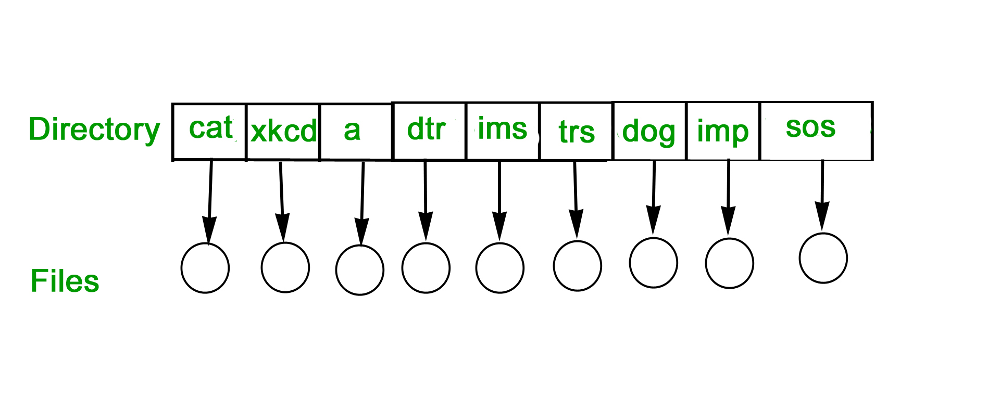
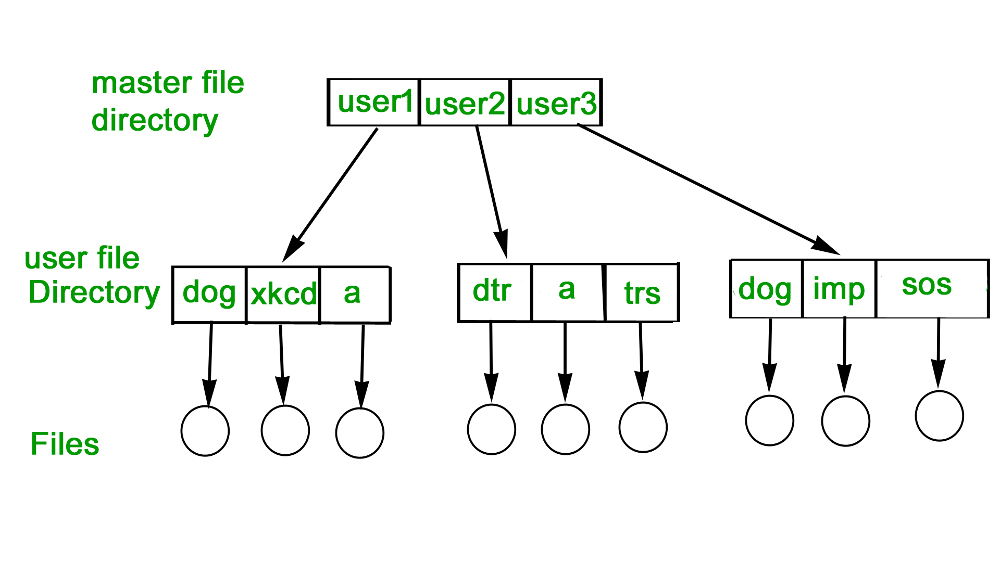
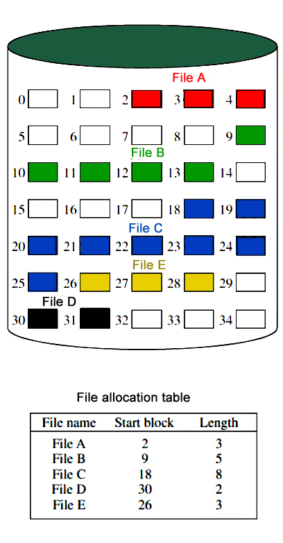

A file is a collection of related information that is recorded on secondary storage. Or file is a collection of logically related entities. From user’s perspective a file is the smallest allotment of logical secondary storage.
| Attributes | Types | Operations |
|---|---|---|
| Name | Doc | Create |
| Type | Exe | Open |
| Size | Jpg | Read |
| Creation Data | Xis | Write |
| Author | C | Append |
| Last Modified | Java | Truncate |
| protection | class | Delete |
| Close |
| File type | Usual extension | Function |
|---|---|---|
| Executable | exe, com, bin | Read to run machine language program |
| Object | obj, o | Compiled, machine language not linked |
| Source Code | C, java, pas, asm, a | Source code in various languages |
| Batch | bat, sh | Commands to the command interpreter |
| Text | txt, doc | Textual data, documents |
| Word Processor | wp, tex, rrf, doc | Various word processor formats |
| Archive | arc, zip, tar | Related files grouped into one compressed file |
| Multimedia | mpeg, mov, rm | For containing audio/video information |
FILE DIRECTORIES:
Collection of files is a file directory. The directory contains information about the files, including attributes, location and ownership. Much of this information, especially that is concerned with storage, is managed by the operating system. The directory is itself a file, accessible by various file management routines.
Information contained in a device directory are:
- Name
- Type
- Address
- Current length
- Maximum length
- Date last accessed
- Date last updated
- Owner id
- Protection information
Operation performed on directory are:
- Search for a file
- Create a file
- Delete a file
- List a directory
- Rename a file
- Traverse the file system
Advantages of maintaining directories are:
- Efficiency: A file can be located more quickly.
- Naming: It becomes convenient for users as two users can have same name for different files or may have different name for same file.
- Grouping: Logical grouping of files can be done by properties e.g. all java programs, all games etc.
SINGLE-LEVEL DIRECTORY
In this a single directory is maintained for all the users.
- Naming problem: Users cannot have same name for two files.
- Grouping problem: Users cannot group files according to their need.

TWO-LEVEL DIRECTORY
In this separate directories for each user is maintained.
{kind=link}
- Path name:Due to two levels there is a path name for every file to locate that file.
- Now,we can have same file name for different user.
- Searching is efficient in this method.

TREE-STRUCTURED DIRECTORY :
Directory is maintained in the form of a tree. Searching is efficient and also there is grouping capability. We have absolute or relative path name for a file.

FILE ALLOCATION METHODS
1. Continuous Allocation: A single continuous set of blocks is allocated to a file at the time of file creation. Thus, this is a pre-allocation strategy, using variable size portions. The file allocation table needs just a single entry for each file, showing the starting block and the length of the file. This method is best from the point of view of the individual sequential file. Multiple blocks can be read in at a time to improve I/O performance for sequential processing. It is also easy to retrieve a single block. For example, if a file starts at block b, and the ith block of the file is wanted, its location on secondary storage is simply b+i-1.

Disadvantage
{kind=link}
{kind=link}
- External fragmentation will occur, making it difficult to find contiguous blocks of space of sufficient length. Compaction algorithm will be necessary to free up additional space on disk.
- Also, with pre-allocation, it is necessary to declare the size of the file at the time of creation.
2. Linked Allocation(Non-contiguous allocation) : Allocation is on an individual block basis. Each block contains a pointer to the next block in the chain. Again the file table needs just a single entry for each file, showing the starting block and the length of the file. Although pre-allocation is possible, it is more common simply to allocate blocks as needed. Any free block can be added to the chain. The blocks need not be continuous. Increase in file size is always possible if free disk block is available. There is no external fragmentation because only one block at a time is needed but there can be internal fragmentation but it exists only in the last disk block of file.
Disadvantage:
- Internal fragmentation exists in last disk block of file.
- There is an overhead of maintaining the pointer in every disk block.
- If the pointer of any disk block is lost, the file will be truncated.
- It supports only the sequencial access of files.
3. Indexed Allocation:
It addresses many of the problems of contiguous and chained allocation. In this case, the file allocation table contains a separate one-level index for each file: The index has one entry for each block allocated to the file. Allocation may be on the basis of fixed-size blocks or variable-sized blocks. Allocation by blocks eliminates external fragmentation, whereas allocation by variable-size blocks improves locality. This allocation technique supports both sequential and direct access to the file and thus is the most popular form of file allocation.

Disk Free Space Management
Just as the space that is allocated to files must be managed ,so the space that is not currently allocated to any file must be managed. To perform any of the file allocation techniques,it is necessary to know what blocks on the disk are available. Thus we need a disk allocation table in addition to a file allocation table.The following are the approaches used for free space management.
- Bit Tables : This method uses a vector containing one bit for each block on the disk. Each entry for a 0 corresponds to a free block and each 1 corresponds to a block in use.
For example: 00011010111100110001In this vector every bit correspond to a particular vector and 0 implies that, that particular block is free and 1 implies that the block is already occupied. A bit table has the advantage that it is relatively easy to find one or a contiguous group of free blocks. Thus, a bit table works well with any of the file allocation methods. Another advantage is that it is as small as possible.
- Free Block List : In this method, each block is assigned a number sequentially and the list of the numbers of all free blocks is maintained in a reserved block of the disk.